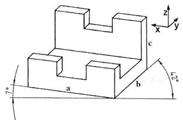
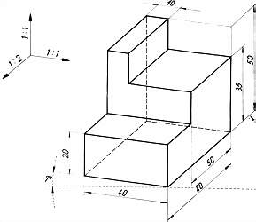

|
Problem: Izdelki, ki jih dokumentiramo, so telesa, ki imajo neko prostornino in zavzemajo doloèen prostor. Dokumentacija, pa naj bo na listih papirja ali v elektronski obliki, pa je sestavljena iz risb, ki so predstavljene na eni ploskvi - v dveh dimenzijah ali razsežnostih. Predmete, ki zapolnjujejo tri razsežnostni ali tri dimenzionalni (3D) prostor, moramo torej predstaviti v dvorazsežnostnem, dvodimenzionalnem (2D) prostoru.
 Slika 1: Telesa, ki imajo doloèeno prostornino in zavzemajo nek prostor, pa lahko narišemo tudi v eni sami risalni ravnini. Ta ravnina seka vse tri prostorske osi. Èe nagnemo telo ali predmet za 45 kotnih stopinj naprej v smeri proti gledalcu, ostanejo navpièni robovi za opazovalca še vedno navpièni. Telo sedaj še nekoliko zasukamo okoli navpiène osi. Poševni robovi so sedaj vidni pod dvema razliènima kotoma: 42 in 7 stopinj. Beseda dimetrièna projekcija pomeni dvomerna projekcija. Dvomerna zato, ker so poševni robovi oziroma razsežnosti narisani v razliènem merilu. Poševni robovi, ki so nagnjeni za 42 stopinj, so narisani samo s polovièno dolžino njihove dejanske dolžine (merilo 1:2). Poševni robovi, ki so nagnjeni za 7 stopinj, so narisani z dejansko dolžino (merilo 1:1). Navpièni in vsi poševni robovi predmeta, ki je narisan v dimetrièni projekciji, so torej narisani v merilu 1:1:2. Dimetrièno projekcijo uporabimo tedaj, ko je ena od ploskev narisanega predmeta še posebej pomembna ali pa vsebuje veliko podrobnosti.  Slika 2: 1. Vprašanja za usmerjanje pozornosti in usvajanje novih besed: 1. Koliko razsežnosti zavzemajo telesa? 2. Kako razsežnosti še imenujemo drugaèe? 3. Koliko razsežnosti zavzemajo narisani liki? 4. Kako se glasi slovenska beseda za besedo dimetrièna? 5. Kaj pomeni beseda dimetrièna? 6. Kakšna je osnovna znaèilnost dimetriène projekcije? 7. Kdaj uporabimo dimetrièno projekcijo? 8. Koliko risalnih ravnin potrebujemo za izometrièno projekcijo? 9. Koliko razsežnosti zavzema risalna površina? 10. Katero projekcijo kaže slika 1? 11. Pod kakšnim kotom sta nagnjeni poševni osi na sliki 1? 12. Kako je oznaèen rob na sliki 1, ki je navpièen? (s katero èrko) 13. Kako je oznaèen rob na sliki 1, ki je nagnjen pod kotom 42 stopinj? (s katero èrko) 14. Kako je oznaèen rob na sliki 1, ki je nagnjen pod kotom 7 stopinj? (s katero èrko) 2. Zapiši od ene do pet kljuènih besed, ki povzemajo vsebino te uène enote. 3. Vprašanja za razmislek, ponavljanje in povezovanje z lastno izkušnjo: 1. Koliko pogledov vsebuje dimetrièna projekcija? 2. Zakaj lahko vidimo v dimetrièni projekciji vse tri prostroske ravnine, èeprav imamo samo eno risalno ravnino? 4. Domaèa naloga: V enem do petih stavkih zapiši, kaj ti je v tej uèni enoti najbolj ostalo v spominu. |